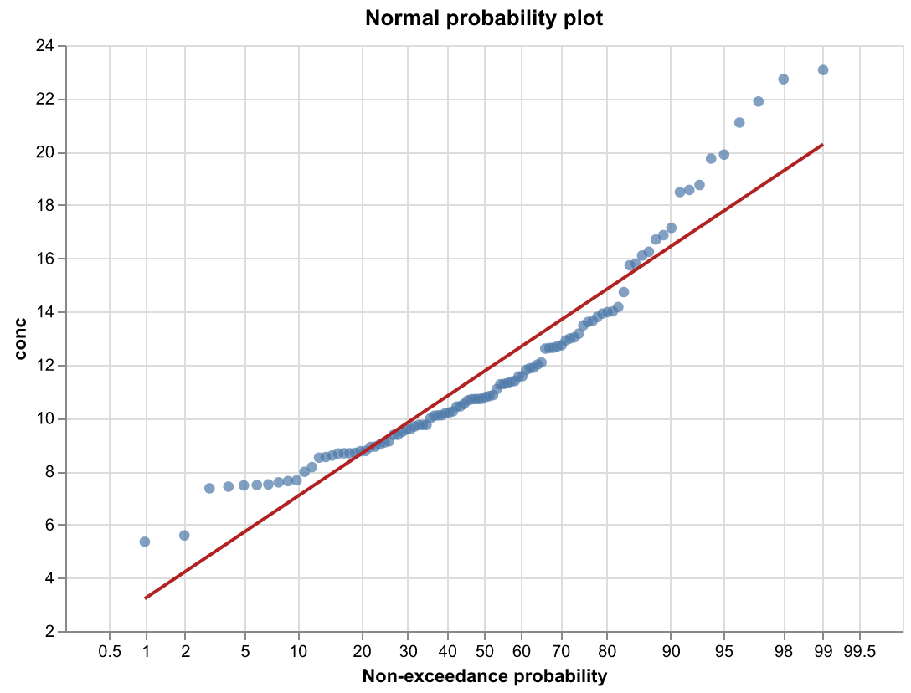

Probability plots in Altair / Vega-Lite#
Note
This is a standalone sketch for people working in Vega-Lite, not part of the mpl-probscale API. It is not run during the docs build and is not covered by the test suite. Altair is not a dependency of this package.
Vega-Lite has no probit scale, but a normal probability plot can be built from two pieces:
Plotting positions are computed inside the spec and passed through Vega’s
quantileNormalfunction to get z-scores.Axis ticks are placed at the z-scores of familiar percentages and relabelled with
cumulativeNormal, the inverse transform.
A least-squares line fit in z-space serves as the normal-distribution fit.


The full script (uv add altair vl-convert-python to run it):
# /// script
# requires-python = ">=3.13"
# dependencies = [
# "altair>=6.3.0",
# "numpy>=2.5.4",
# "pandas>=3.0.6",
# "scipy>=1.18.1",
# "vl-convert-python>=1.9.0.post1",
# ]
# ///
"""Probability plot (normal distribution) in Altair / Vega-Lite.
Vega-Lite has no probit scale, but the same effect is achieved by:
1. computing plotting positions and transforming them with the normal
quantile function (probit) *inside the spec* via Vega's `quantileNormal`,
2. placing axis ticks at the probit of familiar percentages and relabelling
them with `cumulativeNormal` (the inverse transform).
"""
from pathlib import Path
import altair as alt
import numpy as np
import pandas as pd
from scipy import stats
PERCENTS = [0.5, 1, 2, 5, 10, 20, 30, 40, 50, 60, 70, 80, 90, 95, 98, 99, 99.5]
def probability_plot(df, value, title=None, a=0.0, direction="x"):
"""Probability plot of `df[value]`; `direction` is the axis holding probabilities."""
probit_ticks = [float(stats.norm.ppf(p / 100)) for p in PERCENTS]
label_expr = "format(100 * cumulativeNormal(datum.value, 0, 1), '.4~f')"
# Weibull-style plotting positions (i - a) / (n + 1 - 2a), a=0 by default
base = (
alt.Chart(df)
.transform_window(rank="rank()", sort=[alt.SortField(value)])
.transform_joinaggregate(n="count()")
.transform_calculate(
prob=f"(datum.rank - {a}) / (datum.n + 1 - {2 * a})",
z="quantileNormal(datum.prob, 0, 1)",
)
)
prob_enc = alt.Axis(
values=probit_ticks, labelExpr=label_expr, title="Non-exceedance probability",
grid=True,
)
prob_scale = alt.Scale(domain=[probit_ticks[0] - 0.3, probit_ticks[-1] + 0.3])
prob_ch = alt.X if direction == "x" else alt.Y
val_ch = alt.Y if direction == "x" else alt.X
points = base.mark_point(filled=True, size=40).encode(
prob_ch("z:Q", axis=prob_enc, scale=prob_scale),
val_ch(f"{value}:Q", scale=alt.Scale(zero=False), title=value),
tooltip=[value, alt.Tooltip("prob:Q", format=".3f")],
)
# Least-squares best-fit line in probit space (the normal fit)
fit = (
base.transform_regression("z", value, method="linear")
if direction == "x"
else base.transform_regression(value, "z", method="linear")
).mark_line(color="firebrick")
fit = fit.encode(
prob_ch("z:Q", axis=prob_enc, scale=prob_scale),
val_ch(f"{value}:Q"),
)
return (points + fit).properties(width=500, height=350, title=title or "Normal probability plot")
if __name__ == "__main__":
rng = np.random.default_rng(0)
data = pd.DataFrame({"conc": np.hstack([rng.normal(10, 2, 80), rng.normal(18, 3, 20)])})
chart = probability_plot(data, "conc", direction="x")
here = Path(__file__).parent
chart.save(here / "altair_probscale.png", scale_factor=2)
print("wrote altair_probscale.png")
Limitations compared to mpl-probscale: only the normal distribution, no
confidence bands, fixed tick locations, and a single plotting-position
formula (via the a argument).